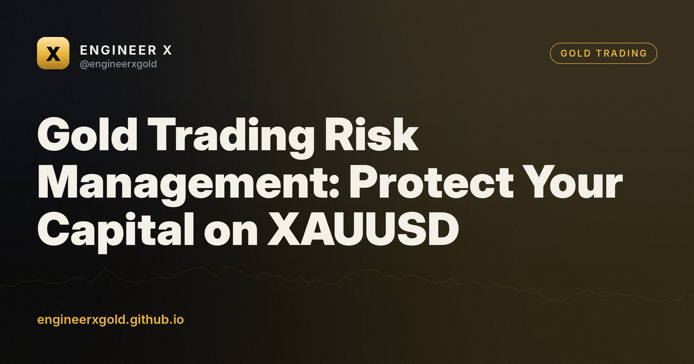

Gold Trading Risk Management: Protect Your Capital on XAUUSD
11 October 2026 · Engineer X educational research

Key takeaways
- Risk only a small, predefined percentage of your total account equity per trade.
- Calculate position sizes based on your stop loss distance rather than arbitrary lot sizes.
- Place stop losses at logical market structure points rather than random levels.
- Maintain low effective leverage to survive unexpected volatility and news events.
Why Gold Trading Requires Strict Risk Management
Gold is one of the most liquid assets in the world, but it is also prone to sudden volatility spikes. Macroeconomic data releases, geopolitical tensions, and shifts in central bank policies can cause XAUUSD to move dozens of dollars in a matter of minutes. Without a defined risk framework, these sharp movements can quickly drain a trading account. Understanding how to manage exposure is essential for long-term survival in the markets.
Many retail traders focus entirely on entry strategies while ignoring downside protection. They treat gold like any other currency pair, failing to account for its unique point value and volatility profile. True capital preservation begins long before you open a trade. It starts with accepting that losses are a normal part of business and preparing for them accordingly.
Calculating Position Size for XAUUSD
Position sizing is the foundation of effective risk management. You should never risk a fixed, emotional amount of money per trade. Instead, calculate your position size based on a small percentage of your total account equity, typically between one and two percent per trade. This ensures that a string of consecutive losses will not cripple your ability to trade.
Consider a hypothetical account balance of 10,000 dollars and a risk tolerance of one percent, which equals 100 dollars. If your technical analysis on a hypothetical XAUUSD chart requires a stop loss of 50 pips, you must calculate your lot size so that hitting that stop loss equals exactly 100 dollars. Using automated tools or MQL5 Expert Advisors can help remove human calculation errors from this process.
🎁 Try our VIP group free for 7 days
Daily XAUUSD zones before London, live signals with entry zone, stop and targets, and every result posted — wins and losses. No card, no payment.
Smart Placement of Stop Loss Orders
A stop loss is your non-negotiable exit door when market conditions invalidate your trading idea. On XAUUSD, placing a stop loss requires understanding market structure rather than picking arbitrary numbers. Placing stops too close to current prices often leads to getting stopped out by normal market noise, while placing them too far increases your financial risk per trade.
Look for logical structural points on your chart, such as recent swing highs or lows, liquidity pools, or key Smart Money Concept zones. If your technical setup requires a wide stop loss to remain valid, you must reduce your lot size to maintain your predetermined risk percentage. Never move your stop loss further away once the trade is active in an attempt to avoid a loss.
Understanding Leverage and Margin in Gold
Brokers often offer high leverage for XAUUSD trading, allowing traders to control large positions with a small amount of margin. While leverage can amplify profits, it does the exact same thing to losses. High leverage is one of the primary reasons retail traders blow up their accounts during high-impact news events like the US Non-Farm Payrolls or FOMC rate decisions.
Professional traders treat leverage as a tool for efficiency, not an invitation to overtrade. Lower effective leverage keeps your margin utilization safe and prevents sudden margin calls during unexpected market gaps. Always check your broker's margin requirements and ensure your account has a sufficient cushion to absorb temporary drawdowns.
Building a Personal Risk Management Checklist
Consistency in trading comes from routine. Developing a pre-trade risk checklist helps eliminate emotional decision-making. Before clicking the buy or sell button on your terminal, verify that your maximum risk is calculated, your stop loss is set at a technical invalidation point, and your risk-to-reward ratio meets your trading plan criteria.
Keep a detailed trading journal to track your risk metrics over time. Reviewing your trades helps identify if you are risking too much during periods of high volatility or revenge trading after a loss. Discipline in risk management is what separates sustainable participants from those who exit the market permanently.
FAQ
What is the recommended risk percentage per gold trade?
Most professional traders recommend risking no more than one to two percent of your total account equity on a single trade to ensure long-term capital preservation.
Why do stop losses get triggered frequently on XAUUSD?
Gold often experiences high intraday volatility and liquidity sweeps. Placing stop losses too close to current price action without accounting for market structure usually leads to premature exits.
How does leverage affect gold trading risk?
High leverage multiplies both potential gains and losses. Using excessive leverage on XAUUSD can quickly lead to margin calls and significant account drawdowns during sudden market movements.
Can automated systems help with risk management?
Yes, automated tools and Expert Advisors can calculate position sizes, enforce stop losses, and eliminate emotional decision-making, provided they are properly configured and tested.
🎁 Try our VIP group free for 7 days
Daily XAUUSD zones before London, live signals with entry zone, stop and targets, and every result posted — wins and losses. No card, no payment.